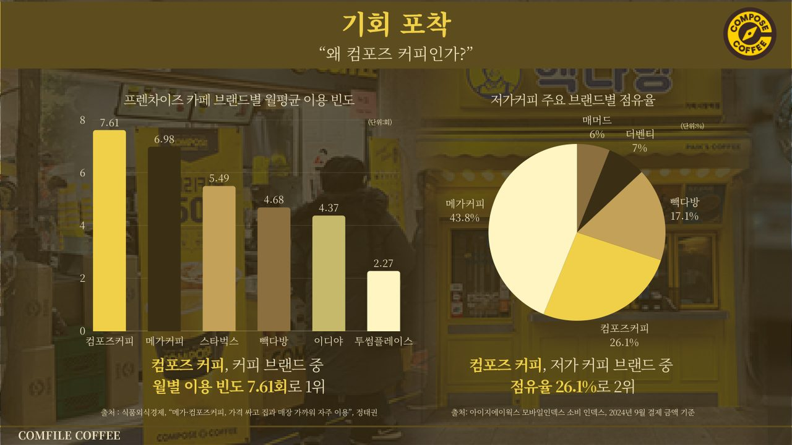
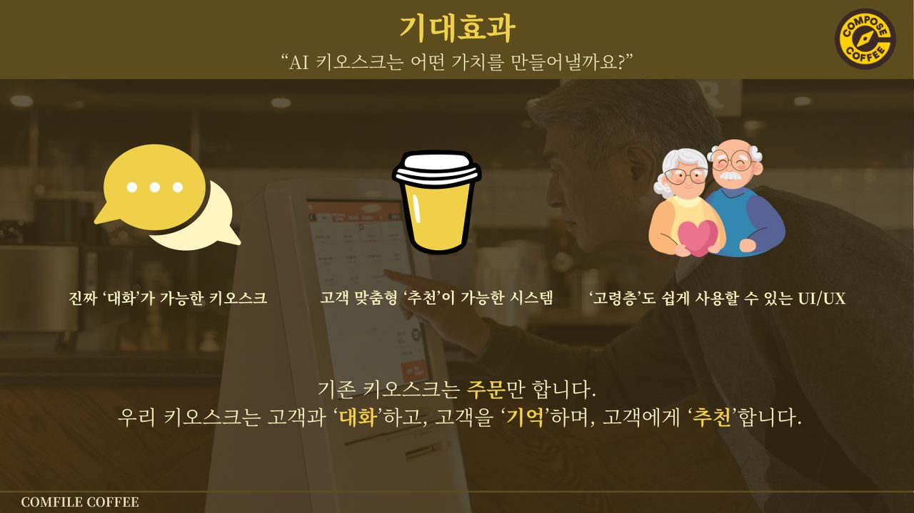

왜 이 프로젝트였나
성장하는 저가 커피 시장에서 60대 이상 고령층 이용률이 59% 급증했으나, 이들이 복잡한 UI와 터치 조작 등 키오스크 이용에 큰 불편(디지털 소외)을 겪는다는 점을 사회적 문제로 정의했습니다.
목적 — 얼굴 인식·음성 주문을 도입해 고령층의 진입 장벽을 낮추는 초개인화 AI 키오스크 개발. 저가 커피 중 고령층 이용 빈도가 가장 높은 컴포즈커피를 B2B 집중 타깃으로 선정.

기획부터 백엔드까지 주도
UI/UX 디자인기여도 100%
Figma·Creati로 고령층 친화 키오스크 전용 인터페이스 및 데모 디자인 설계
기획 · 전략기여도 80%
서비스 전략 도출, 비즈니스 목표 설정, 사용자 여정(Customer Journey) 시나리오 구성
백엔드 구축기여도 50%
FastAPI 기반 백엔드 서버 기능별 엔드포인트 구현
데이터 구조 설계기여도 30%
주문 이력·대화 맥락 이원화 DB 구조 초안 설계 · 일부 LLM 프롬프팅 · 발표 PPT 제작
고객 여정 중심 6단계
- 문제 정의 및 타겟 설정고령층 Pain Point 조사, 컴포즈커피를 타깃 브랜드로 확정
- 서비스 기획 · 흐름 설계얼굴 인식 로그인 → 음성 주문 → 결제까지 전체 고객 여정 시각화
- 데이터 구조 · 아키텍처키오스크에 최적화된 경량 아키텍처와 이원화 DB 설계
- 핵심 기능 개발비접촉 로그인, 음성 텍스트 변환, 맞춤형 메뉴 추천 로직 구현
- 인터페이스 디자인고령층을 고려한 큰 버튼과 실사형 캐릭터 UI 제작
- 테스트 · 고도화응답 일관성을 위한 프롬프트 구조화 및 다층 대화 흐름 구성
얼굴·음성·LLM을 결합한 스택
주문 이력(SQLite)과 대화 맥락(ChromaDB)을 분리 관리하는 이원화 DB 구조로 개인화 추천을 구현했습니다.
기획 · 디자인
개발 · 언어
AI 기술
데이터베이스
구현, 그리고 배움
- 기술 구현 — 얼굴 인식 로그인 및 실시간 음성 주문 시스템 프로토타입 구현
- 데이터 아키텍처 — 주문 이력과 대화 컨텍스트를 분리 관리하는 개인화 DB 구조 완성
- QA·리스크 관리 — 시연 중 주변 소음으로 인한 음성 인식 실패를 겪으며 QA·리스크 관리의 중요성을 체득
- 협업 학습 — 기획 단계 UI와 실제 구현된 서비스 간 차이를 발견, 프론트엔드 개발자와의 지속적 소통·추적 필요성을 배움

발표자료 미리보기
학습자 중심 설계로 잇는 역량
디지털 소외 고령층을 위한 UI 설계 경험은 다양한 학습자 특성(디지털 리터러시·학습 접근성)을 고려한 교육 설계 역량과 직결됩니다. 단순 기능 구현을 넘어 사용자의 접근성을 실질적으로 강화하는 학습자 중심 설계(Learner-Centered Design)의 실증 사례입니다.